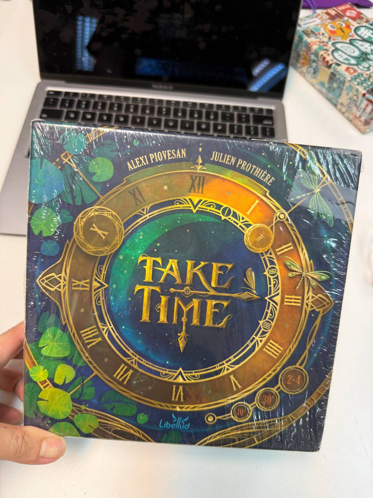
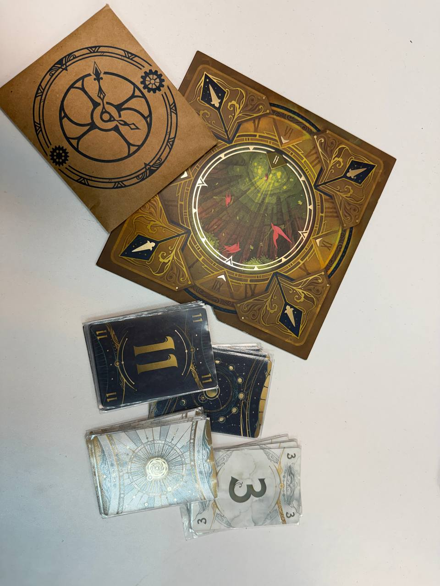
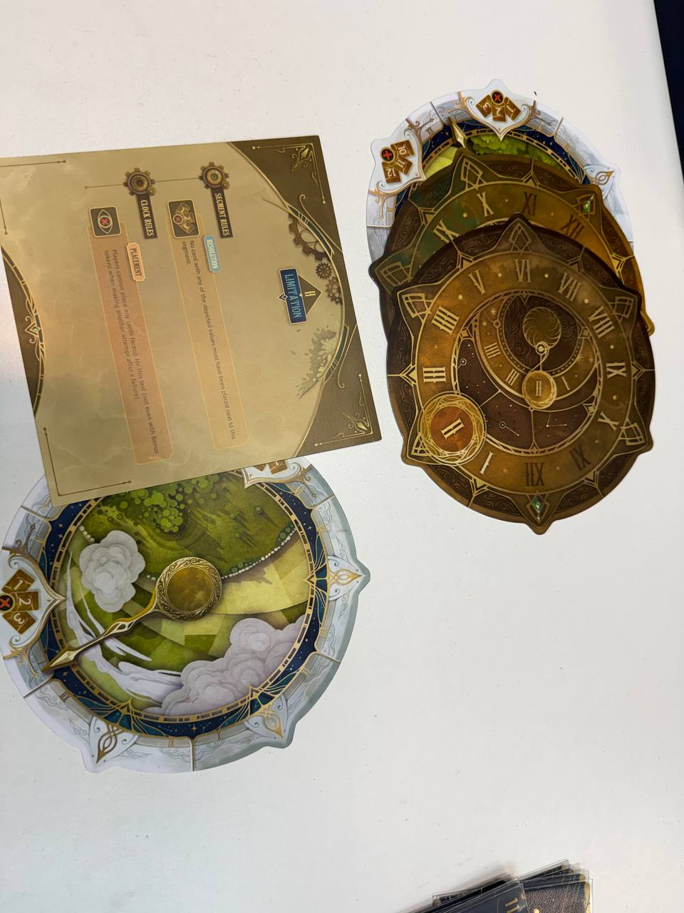
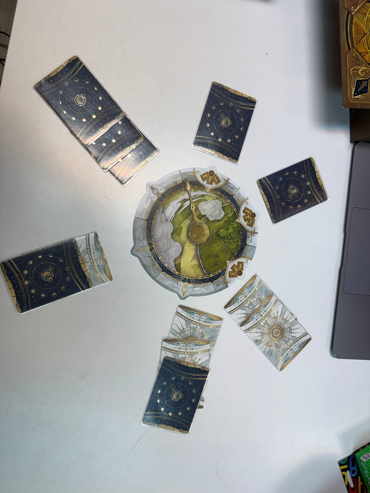

2026 年 7 月 13 日
Take Time（掌握時刻）— 沉默中考驗默契嘅合作遊戲
最近玩咗一隻好有意思嘅合作 game — Take Time（掌握時刻）。
佢嘅玩法好簡單：2-4人合作，每人手上有幾張數字牌（日月牌各1-12），一齊輪流出牌去完成時鐘圖版上嘅條件。但關鍵係——討論完之後，出牌嘅時候唔可以講嘢。
即係話，你要靠默契去估計隊友手上有咩牌、會放喺邊個位置。
點解好玩？
呢個 game 最得意嘅地方係：明明冇人講嘢，但成張枱好「嘈」。你會見到隊友擘大咗口望住你出牌，或者你放錯位嘅時候大家一齊呆咗，然後翻牌嘅時候發現差一點就過關——個種又緊張又好笑嘅氣氛，係其他合作 game 好少見到嘅。




基本規則
- 每人拎起手牌睇，之後唔准再講嘢
- 順時針輪流放一張牌去時鐘嘅 6 個 segment
- 全部放完後一齊翻牌
- 條件：①每段至少1張 ②順時針遞增（由指針段開始）③最後一段總和 ≤24
- 再加上每關嘅特殊規則
總共 40 關（10章 × 4關），由淺入深。輸咗可以 skip 咗佢之後再試。
適合咩人？
- 🎯 規則簡單，5分鐘教完
- 🤝 合作唔係各自為政
- 😂 氣氛好好，輸咗都好笑
- 🧠 要靠默契唔係靠運氣
小資訊
出版：Libellud（Dixit、Mysterium 同一間出版社）
時間：15-25分鐘
人數：2-4人
年齡：10+
3D 打印配件
唔見咗時鐘嘅指針？可以自己印一個代替：
🖨️ Printables：Take Time 時鐘指針 STL模型設計：JV Lobo（@jvlobo）— CC BY-NC-SA 4.0